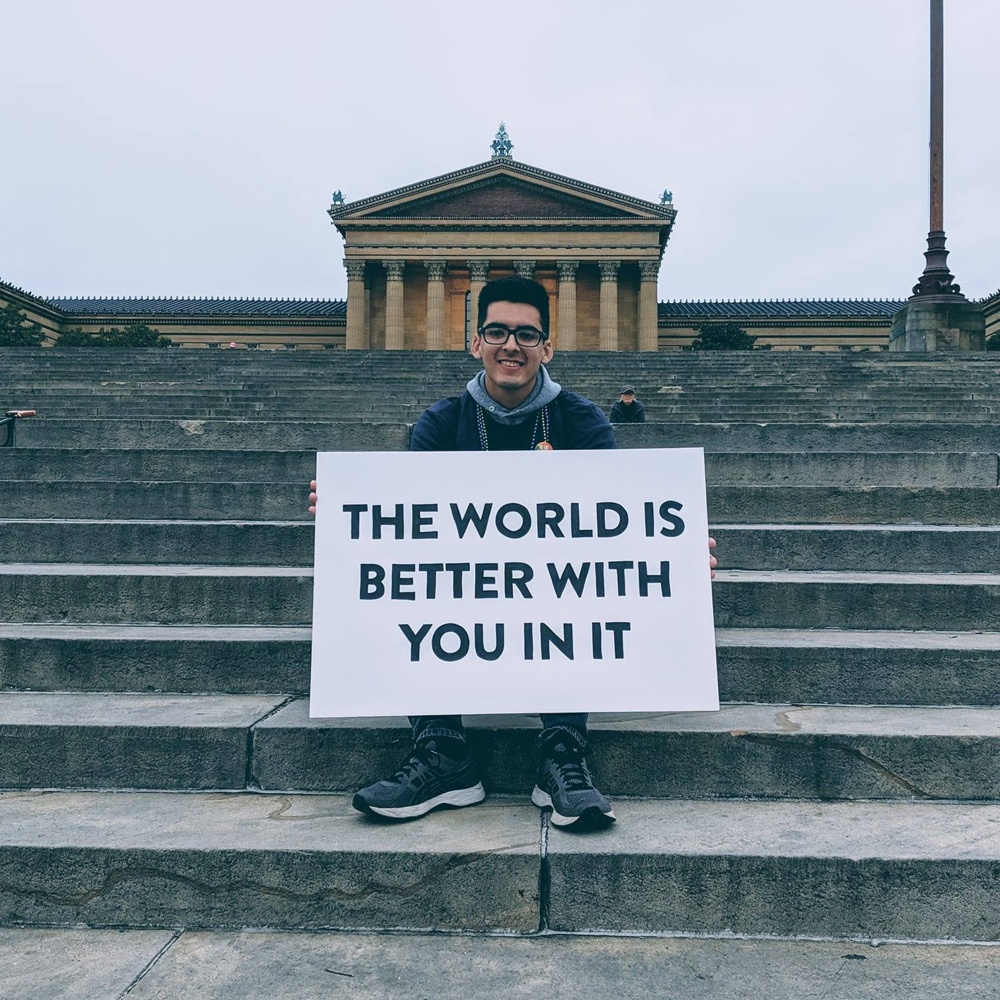

William Careri

I have always been a creative person, finding ways to tell stories through words and visual languages. While my mediums may have changed, my passion for creating has only grown stronger.
Currently
Temple University, Associate Director of Insights and Analytics
Northampton Community College, Adjunct Professor
Local Wisdom, Communications Consultant
Previously
Nike
Microsoft
Science History Institute
Philadelphia City Council
Johnson & Johnson
Nightingale, the Journal of the Data Visualization Society
Speaking
Northampton Community College, Pocono Campus Alumni Commencement Speaker 2026
The VoxPopcast, "Tommy Westphall's Snowglobe" 2026
Roku, "Art of the Possible" 2025
Center for Disease Control and Prevention, "Communicating Data" 2024
UMass Amherst, "Social Media in Times of Crisis" 2023
MAASIN, "Mental Health in the Marching Arts" 2021
TEDxTempleU, "The Importance of Sharing Your Story" 2019
Education
M.P.S. Data Analytics and Visualization, Maryland Institute College of Art
B.A. Public Relations, Temple University's Klein College of Media and Communication
A.A. Communication Studies, Northampton Community College
Recognition
PBS
Data Visualization Society
Temple University
Axia Public Relations
Stabler Foundation
Connect
About this site
This site was created by me using HTML, CSS, and JavaScript, currently hosted on a Github repository. Previous iternations of this site have existed on WIX, Webflow, and Cargo.
The typeface is Poppins, designed by Jonny Pinhorn and Ninad Kale. The background color is Bright Gray (#EFEFEF) and the typeface & hover color is Charleston Green (#292929).
Check out what I'm doing now.